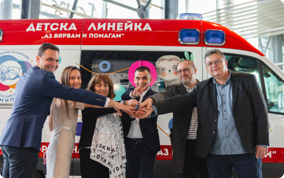
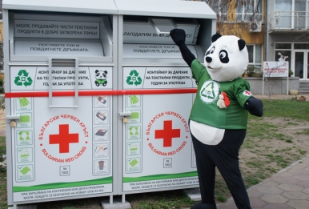
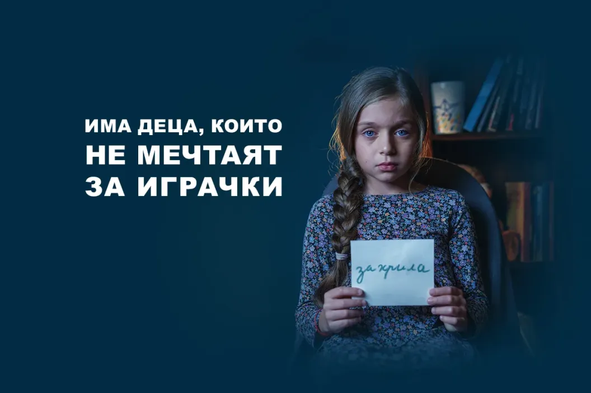
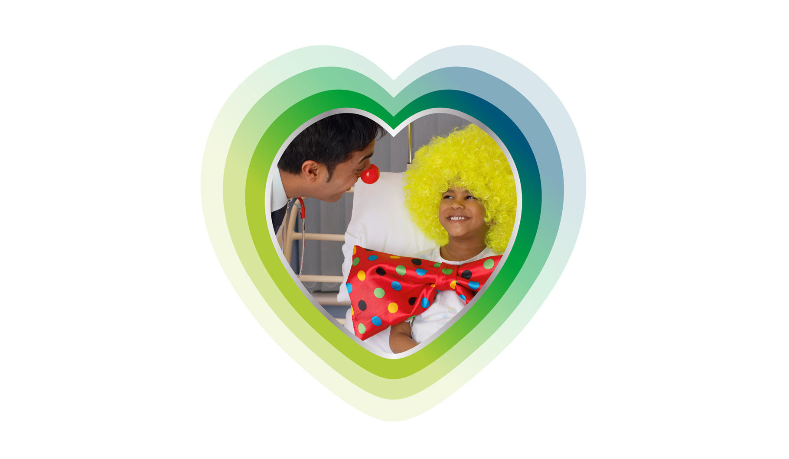
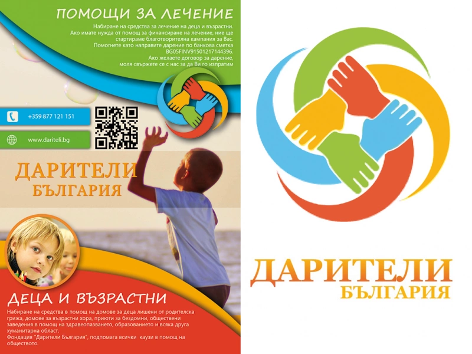
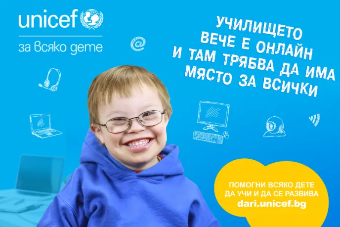
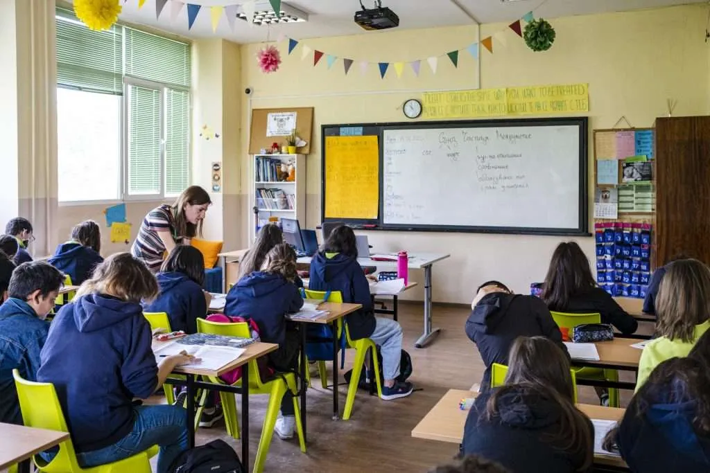
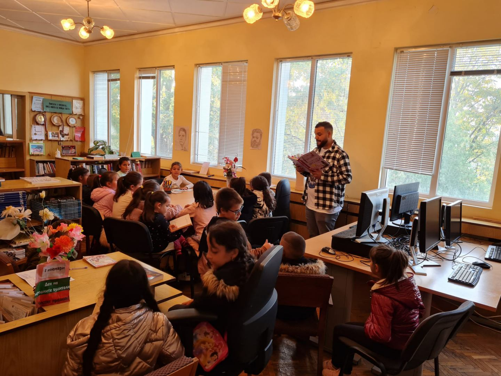
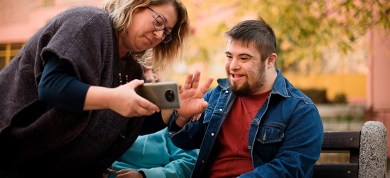

Национални кампании
Кампании с широко обществено значение, които обхващат цялата страна
Национални кампании
-
Българската Коледа
Национална благотворителна кампания за набиране на средства за лечение на деца и закупуване на медицинска апаратура за болници в България.
https://www.bgkoleda.bg/ -
Аз вярвам и помагам

Национална кауза за подкрепа на здравеопазването чрез закупуване на медицинско оборудване, линейки и мобилни пунктове за кръводаряване.
https://azviarvamipomagam.bg/ -
Български Червен кръст – Благотворителни кампании

Кампании за подпомагане на уязвими групи, здравни инициативи, първа помощ и хуманитарна подкрепа в цялата страна.
https://www.redcross.bg/campaign/active_campaigns -
UNICEF България – Национални кампании

Кампании в подкрепа на детското здраве, психично благополучие, образование и защита на правата на децата.
https://www.unicef.org/bulgaria/campaigns -
Заедно за здраве – ТЕВА България

Дарителска програма, която подкрепя пациентски организации и проекти за подобряване на здравните грижи.
https://www.teva.bg/humanizing-health/ -
Дарители България

Национална платформа, събираща и популяризираща благотворителни кампании за здравни, социални и хуманитарни каузи.
https://dariteli.bg/
Кампания за образование
-
Подкрепи една мечта
Национална кампания за набиране на средства за стипендии и подкрепа на деца и младежи в неравностойно положение.
https://podkrepi-edna-mechta.bg/ -
Направи добро – дари книга

Кампания за насърчаване на четенето чрез даряване на книги за училища, библиотеки и деца от уязвими общности.
https://www.nationallibrary.bg/ -
Образование за всяко дете

Национална инициатива за достъп до качествено образование, превенция на отпадането от училище и подкрепа на деца в риск.
https://nmd.bg/ -
Teach For Bulgaria (Заедно в час)

Национална програма за подобряване на образованието чрез подготовка и подкрепа на мотивирани учители в училища с недостиг на кадри.
https://zaednovchas.bg/ -
Голямото четене
Национална кампания за насърчаване на четенето и любовта към книгите сред деца и възрастни.
https://bgnovinite.bg/2025/11/05/nacionalna-iniciativa-nasurchava-liubovta-kum-cheteneto-prez-noemvri/ -
Успех за теб

Национална програма, финансирана от ЕС, за допълнителна подкрепа и приобщаване на ученици със специални образователни потребности.
https://www.mon.bg/ -
TimeHeroes – Образователни каузи

Национална платформа, която обединява доброволчески инициативи и кампании в сферата на образованието.
https://timeheroes.org/bg/